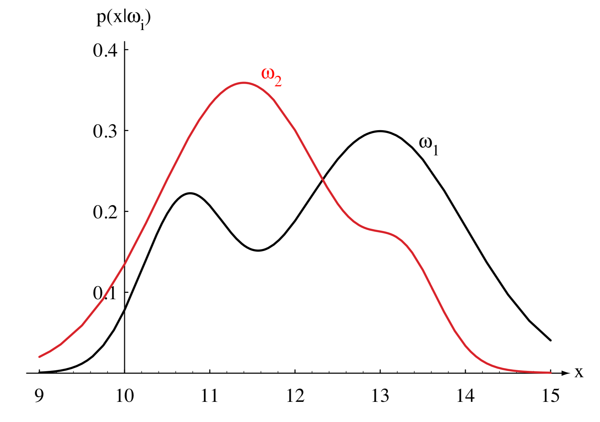
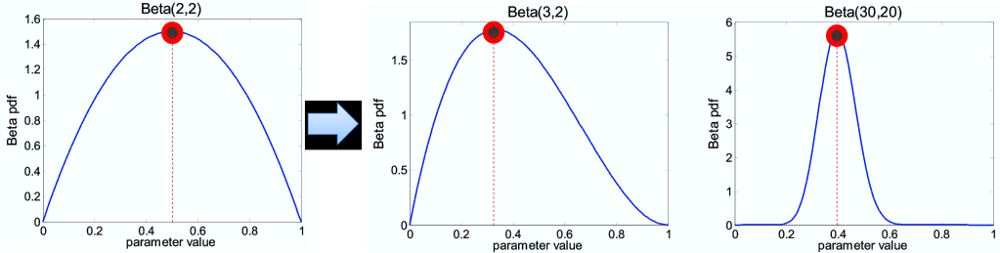
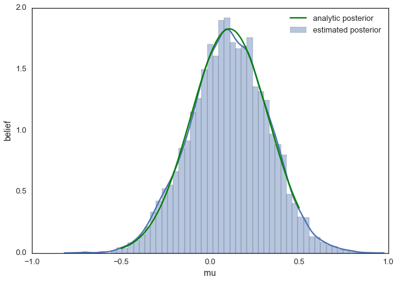
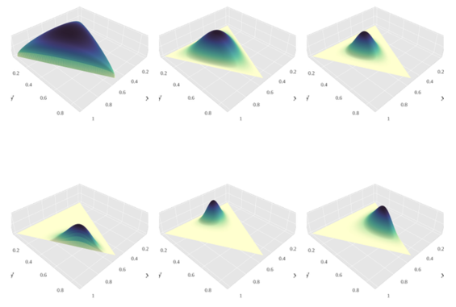

Advanced Machine Learning
08: Bayesian Decision Theory
Schedule
| # | date | topic | description |
|---|---|---|---|
| 1 | 22-Aug-2022 | Introduction | |
| 2 | 24-Aug-2022 | Foundations of learning | |
| 3 | 29-Aug-2022 | PAC learnability | |
| 4 | 31-Aug-2022 | Linear algebra (recap) | hw1 released |
| 05-Sep-2022 | Holiday | ||
| 5 | 07-Sep-2022 | Linear learning models | |
| 6 | 12-Sep-2022 | Principal Component Analysis | project ideas |
| 7 | 14-Sep-2022 | Curse of Dimensionality | hw1 due |
| 8 | 19-Sep-2022 | Bayesian Decision Theory | hw2 release |
| 9 | 21-Sep-2022 | Parameter estimation: MLE | |
| 10 | 26-Sep-2022 | Parameter estimation: MAP & NB | finalize teams |
| 11 | 28-Sep-2022 | Logistic Regression | |
| 12 | 03-Oct-2022 | Kernel Density Estimation | |
| 13 | 05-Oct-2022 | Support Vector Machines | hw3, hw2 due |
| 10-Oct-2022 | * Mid-point projects checkpoint | * | |
| 12-Oct-2022 | * Midterm: Semester Midpoint | exam | |
| 14 | 17-Oct-2022 | Matrix Factorization | |
| 15 | 19-Oct-2022 | Stochastic Gradient Descent |
| # | date | topic | description |
|---|---|---|---|
| 16 | 24-Oct-2022 | k-means clustering | |
| 17 | 26-Oct-2022 | Expectation Maximization | hw4, hw3 due |
| 18 | 31-Oct-2022 | Automatic Differentiation | |
| 19 | 02-Nov-2022 | Nonlinear embedding approaches | |
| 20 | 07-Nov-2022 | Model comparison I | |
| 21 | 09-Nov-2022 | Model comparison II | hw5, hw4 due |
| 22 | 14-Nov-2022 | Model Calibration | |
| 23 | 16-Nov-2022 | Convolutional Neural Networks | |
| 21-Nov-2022 | Fall break | ||
| 23-Nov-2022 | Fall break | ||
| 24 | 28-Nov-2022 | Word Embedding | hw5 due |
| 30-Nov-2022 | Presentation and exam prep day | ||
| 02-Dec-2022 | * Project Final Presentations | * | |
| 07-Dec-2022 | * Project Final Presentations | * | |
| 12-Dec-2022 | * Final Exam | * | |
| 15-Dec-2022 | Grades due |
Outline for the lecture
- Preliminaries
- The Bayesian View
Preliminaries
Probability theory is nothing but common sense reduced to calculation
- Pierre-Simon Laplace, 1812
Deductive and plausible reasoning
Random Variables
Probability Distributions
Probability Distributions
The Bayesian view
Bayesian decision theory
Definition: Quantify the trade-offs between various classification decisions based on probabilities and the costs that accompany such decisionsAssumptions:
- The decision problem is posed in probabilistic terms
- All relevant probability values are known
The Prior
- $\omega$ is a random variable: fish type
- $\omega\in \{\omega_1, \omega_2\}$ $\omega_1$ - salmon, $\omega_2$ - sea bass
- $\prob{P}{\omega_1}$ - the a priory probability (prior) that fish is a salmon
- $\prob{P}{\omega_2}$ - the a priory probability (prior) that fish is a sea bass
-
Gives us the knowledge of how likely we are to get salmon before we see any fish
Priors-only decision rule
How do we make a decision between $\omega_1$ and $\omega_2$ if all we know is the priors $\prob{P}{\omega_1}$ and $\prob{P}{\omega_2}$?
-
decide if salmon $\prob{P}{\omega_1} \gt \prob{P}{\omega_2}$ sea bass $\prob{P}{\omega_1} \lt \prob{P}{\omega_2}$ - Thus minimize your probability of being incorrect
$\prob{P}{\mbox{meet}} \gt \prob{P}{\overline{\mbox{meet}}}\rightarrow\mbox{shoot}$
Decide based just on the prior
- If $\prob{P}{\omega_1} \gg \prob{P}{\omega_2}$, you are right most of the time when deciding $\omega_1$
- If $\prob{P}{\omega_1} = \prob{P}{\omega_2}$, you are taking a random guess when deciding $\omega_1$
- No other decision rule can yield larger (expected) probability of being right
Use observations to increase our chances
- If we know the class conditional probability density $\prob{P}{\vec{x}|\omega_i}$ we can make better decisions
- For example, $\vec{x}$ is the observed lightness of a fish


Thomas Bayes
Bayes theorem
- Use the observed feature(s) $\vec{x}$ and the Bayes theorem
\[ \prob{P}{\omega_i|\vec{x}} = \frac{\prob{P}{\vec{x}|\omega_i}\prob{P}{\omega_i}}{\prob{P}{\vec{x}}} \]
- In "plain English"
\[ \mbox{posterior} = \frac{\mbox{likelihood}\times\mbox{prior}}{\mbox{evidence}} \]
- Evidence for $C$ classes $ \prob{P}{\vec{x}} = \sum_i^C\prob{P}{\vec{x}|\omega_i}\prob{P}{\omega_i} $
\[
\prob{P}{\omega_i|\vec{x}} = \frac{\prob{P}{\vec{x}|\omega_i}\prob{P}{\omega_i}}{\prob{P}{\vec{x}}}
\]
Put this to numbers
One person in 200,000 has a particular Progressive multifocal leukoencephalopathy (PML). There is a diagnostic test for the disease. It is correct 99% of time. Your test is positive what's the probability you have PML?
- $\vec{x}$ - tested positively
- $\prob{P}{+|PML} = 0.99$
- $\prob{P}{+|\overline{PML}} = 0.01$
- $\prob{P}{PML} = \frac{1}{200,000}$
- $\prob{P}{\overline{PML}} = \frac{199999}{200,000}$
- $\prob{P}{PML|+} \approx 0.05\%$
Decide based on posterior
- If $\prob{P}{\omega_1|\vec{x}} \gt \prob{P}{\omega_2|\vec{x}}$, decide $\omega_1$
- If $\prob{P}{\omega_1|\vec{x}} \lt \prob{P}{\omega_2|\vec{x}}$, decide $\omega_2$
- $\prob{P}{error|\vec{x}} = \min[\prob{P}{\omega_1|\vec{x}}, \prob{P}{\omega_2|\vec{x}}]$

General Bayesian Decision Theory
- Multiple features in $\vec{x}$
- More than two states of nature (classes)
- Allow actions (also refusal to act)
- Loss function more general that probability of error
General Bayesian Decision Theory: formally
- $\Omega = \{ \omega_1, \omega_2, \dots, \omega_C\}$ $c$ categories
- $\vec{x} = \{x_1, x_2, \dots, x_d\}$ $d$-dimensional feature vector
- $\vec{\alpha} = \{\alpha_1, \alpha_2, \dots, \alpha_A\}$ set of actions
- $\lambda(\alpha_i|\omega_i)$ loss incurred for taking action $\alpha_i$ in case of $\omega_i$
- Conditional risk \begin{array} \prob{R}{\alpha_i|\vec{x}} = \sum_j^C \lambda(\alpha_i|\omega_j)\prob{P}{\omega_j|\vec{x}} \end{array}
- Total risk \begin{array} \prob{R}{\vec{x}} = \sum_i^A \prob{R}{\alpha_i|\vec{x}} \end{array}
\[
\prob{N}{\mu, \sigma} = \frac{1}{\sigma\sqrt{2\pi}} e^{ -\frac{1}{2}\left(\frac{x-\mu}{\sigma}\right)^2 }
\]
Assignment
Draw probability densities and find the decision regions for the following classes:
- $\Omega = \{ \omega_1, \omega_2\}$
- $\prob{P}{x|\omega_1} \sim \prob{N}{20, 4}$
- $\prob{P}{x|\omega_2} \sim \prob{N}{15, 2}$
- $\prob{P}{\omega_1} = \frac{1}{3}$
- $\prob{P}{\omega_2} = \frac{2}{3}$
- Classify $x = 17$
Maximum A Posteriori
The poor man's Bayes

$n = \alpha_H + \alpha_T$ increases $\rightarrow$
- Potentially, can know all there's to know about posterior
- But chose to go for a single parameter estimate
Can estimate full distributions
need to resort to sampling

Choosing conjugate priors
striving for simple analytical forms
